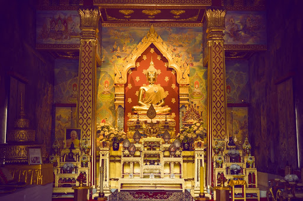

Location and Significance:
The Wat Thai Temple is located in Kushinagar, Uttar Pradesh, India.
Kushinagar holds great importance in Buddhism as it is believed to be
the place where Gautama Buddha attained Mahaparinirvana, his final
passing away. The temple is situated within the vicinity of other
Buddhist pilgrimage sites in Kushinagar, such as the Mahaparinirvana
Stupa and Ramabhar Stupa.
Architecture:
The temple's architecture is distinctly Thai, reflecting traditional
Thai Buddhist styles. It typically features a central pagoda or chedi
(stupa) structure, often adorned with intricate carvings, gold or
colorful decorations, and Thai-style roofing. Surrounding the main
temple, you may find beautifully landscaped gardens, reflecting pools,
and statues of Buddha in various poses.
Cultural and Religious Activities:
The Wat Thai Temple serves as a hub for Thai Buddhists visiting
Kushinagar. It provides a venue for religious ceremonies, meditation
retreats, and cultural events. Monks and devotees from Thailand often
visit the temple to pay homage to Buddha and engage in spiritual
practices. Visitors can participate in chanting sessions, meditation
sessions, and offerings to the Buddha, creating a serene and
reflective atmosphere.
Tourism and Visitor Experience:
The temple complex is open to tourists and pilgrims alike. Visitors
can explore the temple grounds, admire the architecture, and learn
about Thai Buddhist culture. Information boards and guides may be
available to provide insights into the temple's history, significance,
and the rituals performed there. The Wat Thai Temple offers a peaceful
retreat away from the bustling pilgrimage sites, allowing visitors to
connect with Buddhism in a serene and contemplative setting.
Community and International Relations:
The establishment of the Wat Thai Temple in Kushinagar highlights the
cultural and religious ties between Thailand and India. It serves as a
symbol of international cooperation and friendship, fostering cultural
exchange and understanding between Thai Buddhists and the local Indian
community. The temple also plays a role in promoting tourism and
enhancing the spiritual experience of visitors to Kushinagar.
The Wat Thai Temple in Kushinagar, India, is known for its intricate
and traditional Thai architectural style, reflecting the rich cultural
heritage of Thailand. Here are detailed insights into the temple's
interior:
Main Prayer Hall:
The central feature of the temple is typically the main prayer hall,
which houses statues of Buddha and other revered figures from Thai
Buddhist tradition. The hall is designed to facilitate meditation and
prayer, with a serene atmosphere conducive to spiritual contemplation.
Walls and pillars may be adorned with traditional Thai artwork,
including murals depicting scenes from the life of Buddha or symbolic
motifs.
Buddha Statues and Icons:
The temple is likely to feature multiple Buddha statues, each
representing different aspects of Buddha's life or teachings. The
principal statue may depict Buddha in the posture of meditation or in
the moment of his attainment of enlightenment (Buddha in the posture
of touching the earth). Surrounding the main statue, smaller icons and
figurines of Bodhisattvas (enlightened beings) and guardian deities
may also be present.
Altar and Offerings:
At the front of the main prayer hall, there is usually an altar where
offerings such as flowers, candles, and incense are placed as acts of
devotion. Devotees visiting the temple often make offerings and light
candles or incense sticks as a gesture of respect and to seek
blessings. The altar area is typically adorned with intricate carvings
or decorative elements that enhance its sacred ambiance.
Ceiling and Decorative Elements: The interior ceiling
of the temple may feature elaborately painted designs or carvings,
often depicting celestial beings, lotus flowers (a symbol of purity),
or intricate geometric patterns. Traditional Thai craftsmanship in
woodwork, painting, and decorative arts is often evident throughout
the interior, showcasing the skill and artistic traditions of
Thailand.
Quiet Corners and Meditation Areas:
Apart from the main prayer hall, the Wat Thai Temple may have smaller
chapels or alcoves designed for individual meditation and
contemplation. These quieter spaces provide opportunities for personal
reflection and spiritual practice amidst the bustling pilgrimage site
of Kushinagar.
